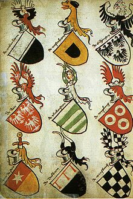
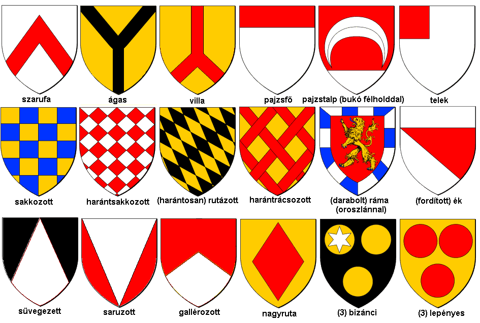

|
 |
Mi a heraldika?A heraldika vagy címertan (korábban czímerintézmény (Bárczay, előszó), címerészet (Vajay)) a címerekkel foglalkozó történeti segédtudomány. Elnevezését a heroldokról kapta, akik a címerek első középkori szakértői voltak. Két részre oszlik: címerelméletre és címerművészetre. A címerelmélet, elméleti heraldika vagy a szorosabb értelemben vett címertudomány a címerjogot, a címerek történetét érinti, a szabályos és szabályellenes címerekkel, a címerismerettel (régiesen: címerisme) foglalkozik. A címerművészet, a címerábrázolás tana vagy címergyakorlat a címerek szabályos megszerkesztésével, megrajzolásával (kiállításával), leírásával, gyakorlati alkalmazásával, historizálásával és a címerkritikával foglalkozik. A címer összetevőiA címer legfontosabb része a pajzs, mivel az első ilyen megkülönböztető jeleket is a pajzsokon viselték. Ezért a tulajdonképpeni címernek a pajzsot mint alakot tekintjük. A címer többi részei az úgynevezett címerrészek és címertartozékok. A pajzsból, sisakból, sisakkoronából, sisaktakaróból és sisakdíszből álló címert teljes címernek is nevezik. A címer akkor is címer marad, ha csak a pajzsból áll. A többi címerrész el is maradhat, de a pajzs sohasem hiányozhat. A címerpajzsnak a címerábrák elhelyezésére szolgáló felülete a mező. A pajzsot a címerviselő szemszögéből kell szemlélni, mintha az a mellvértjén lenne, vagyis ami szemből nézve vagy papírra vetve a jobb oldalon van, az a viselő szemszögéből és így a heraldikai nevezéktan szerint is bal oldali. Irodalom
 A heraldika forrásaiA címertan forrásait két fő részre oszthatjuk: írott és képzőművészeti forrásokra. Az írott források közé tartoznak a címerek szóbeli leírásai, mint egyes trubadúrok és címerköltők művei (Chrétien de Troyes, Wolfram von Eschenbach, Ulrich von Lichtenstein, Konrad von Würzburg, Peter Suchenwirt stb.), más írott források, a címermondák stb. A képzőművészeti források közé tartoznak a címeres levelek, pecsétek, pénzérmék, sírkövek, címerkönyvek, címertekercsek, halotti pajzsok, zászlók stb. |